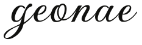
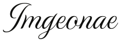
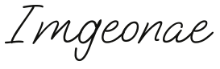
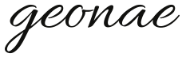

Signature study · 01—05

굵은 획과 유연한 곡선이 있어 작은 크기에서도 가장 또렷한 서명형

가늘고 긴 획이 특징인 정제된 캘리그래피형으로 가장 우아한 인상
한 줄로 자연스럽게 이어지는 모노라인 서체로 현재 미니멀 레이아웃과 가장 안정적인 조합

실제로 펜으로 빠르게 적은 듯한 리듬이 있어 가장 개인적이고 자연스러운 서명형

획의 대비가 부드럽고 읽기 쉬워 우아함과 친근함의 균형이 좋은 클래식형